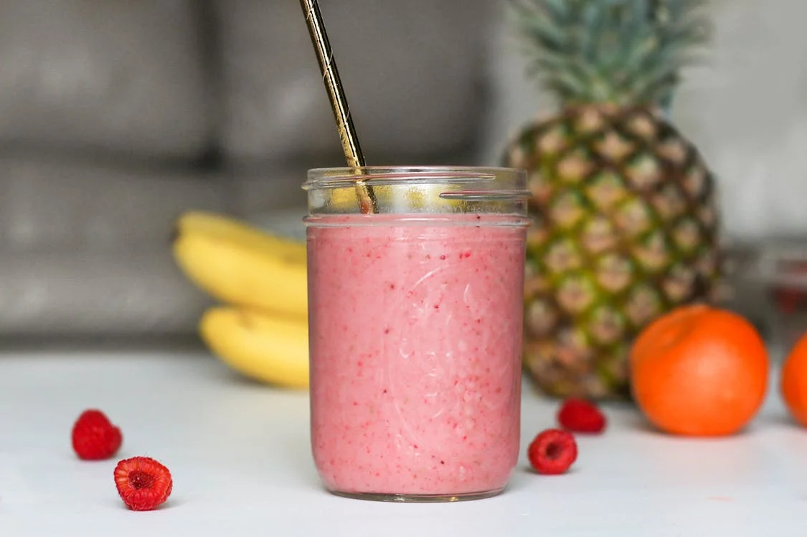

Banana raspberry almond smoothie recipe

Description
A creamy, refreshing smoothie with the natural sweetness of banana, the tart brightness of raspberries, and the nutty richness of almond butter. Great for breakfast, post-workout, or a clean snack.
Ingredients
- 1 ripe banana
- ¾ cup frozen raspberries
- 1 tbsp almond butter
- 1 cup almond milk (or any milk of choice)
- 1 tsp honey or maple syrup (optional)
- A few ice cubes (optional, for thicker texture)
Steps
- Add ingredients to a blender: banana, raspberries, almond butter, and almond milk.
- Optional sweetening: Add honey or maple syrup if desired.
- Blend on high for 30–60 seconds, until smooth.
- Check texture: Add more milk for thinner, or ice cubes for thicker.
- Serve immediately in a chilled glass.
Home